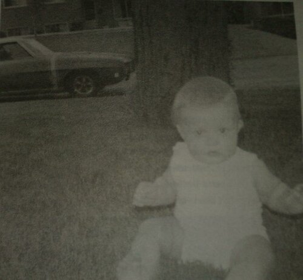
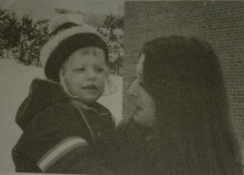
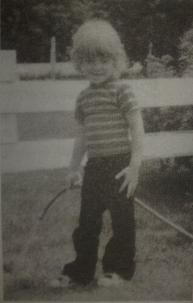
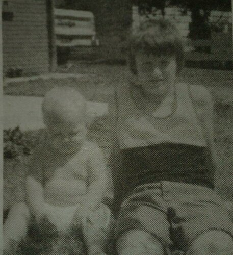
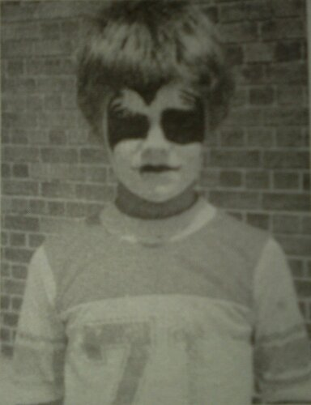
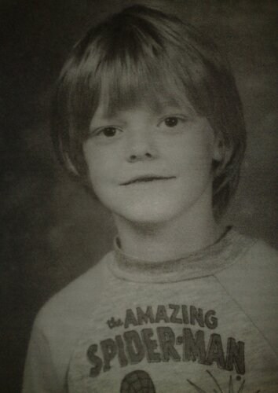

Глава 2
Перевод Тани (Dark Bird) для VSplanet.net

Да, это я.
Когда я начал заниматься реслингом, моей установкой было: я должен быть собой. Любят меня, ненавидят меня, я просто буду собой. На протяжении многих лет я не был собой. По крайней мере человеком, которым я являюсь сейчас. Это была длинная, скалистая, ветряная и довольно крутая дорога, чтобы добраться туда, где я нахожусь сегодня (нет, я сейчас не о вмятине в диване). Я испытал хорошее, плохое, трудности, радость и грусть, много крови, пота, слез… ну-да, я знаю, всем надоевшая избитая фраза.
Но довольно об обреченности и угнетённости.
Всё началось в сонном городке именуемом Оранджвилл, провинция Онтарио, в Канаде. Это был хороший город, город рабочих, расположенный в сорока минутах езды на северо-запад от Торонто. В Оранджвилле у вас есть два варианта: работать на фабрике в городе или, если повезет, получить работу в Торонто. Даже в юном возрасте моей целью было не соглашаться с выбором между этими вариантами, а стремится к чему-то лучшему.
Но мы должны вернуться чуть дальше назад, так что предадимся сладостным грезам путешествия во времени и отправимся в то время, когда всеми любимый Эджмастер ещё бил ногой в живот его мамы, словно Ларс Ульрих из Metallica при исполнении «One».
Моя мама, Джуди Коупленд, родилась 2 января 1953 года. Она ушла из дома в возрасте семнадцати лет. В конце концов она вышла замуж и забеременела вашим покорным слугой. Прежде чем я родился, этот парень слинял. Не совсем классно. Горько? В юности, может быть, было немного горечи. Это всё ещё то, о чём я не завожу разговор с моей мамой. Почему, спросите вы? Отчасти потому, что на данный момент мне все равно. Также потому, что я чувствую, это может открыть старые раны. Я никогда не встречал этого человека. На самом деле, я даже никогда не видел его фотографию. Почему я должен хотеть встретиться с кем-то подобным? Во всяком случае, он научил меня, чего мне не надо делать, когда я стану отцом. Кроме того, как я собираюсь объяснить, я никогда не чувствовал, что мне чего-то не хватало, когда я рос.
Я родился весом 4,88 кг 30 октября 1973 года в 7:05 в больнице Оранджвилля. Вскоре после этого мы переехали в близлежащий Кембридж, провинция Онтарио, но через пару лет мы вернулись обратно в Оранджвилл.

Моей маме тогда было двадцать три, а мне было три года, и мы вернулись туда, откуда начали, в прославленный Оранджвилл. Было тяжело, но весело, по крайней мере для меня. Моя мама работала на двух работах, секретарём в течение дня и официанткой в ночное время (я всегда даю хорошие чаевые, потому что знаю, каково приходится официанткам). Когда мама отправлялась на работу официантки, я либо шёл к моим бабушке и дедушке, либо приезжал один из моих дядей. Почти вся моя семья жила в Оранджвилле. Это было хорошее время. Я делал вид, что засыпаю на диване у дедушки и бабушки, просто чтобы услышать, как бабушка говорит: «Благослови его маленькое сердце», а затем она целовала меня. Я всё ещё слышу это, как будто это было вчера.
У моих бабушки и дедушки было девять детей, пять мальчиков и четыре девочки. Все мальчишки играли в хоккей и все до одного играли на воротах. Позвольте мне заявить, что для того, чтобы быть вратарём у Вас должно не хватать винтика (говорит человек, не раз прыгавший с пятиметровой лестницы). Родившись в Канаде, вы также родились в хоккее.

На заднем дворе у моих дедушки и бабушки.
Видите ли, это были 1970-е, и в Торонто Maple Leafs играли такие легенды как: Дэррил Ситтлер (с которым я позже играл на ежегодных благотворительных играх), Бьёр Салминг, Лэнни Макдональд и Майк Палмати на воротах. Я забирался на колени к дедуше, и он качал меня, словно я ехал на лошади, пока дяди смотрели хоккей по телевизору. Мама в это время была на работе. Она приходила за мной около двух часов ночи, мы возвращались домой, а затем утром она вставала, и все повторялось. Для меня это было нормально, и я никогда не чувствовал нехватки в любви. Я всегда был окружен любящими родственниками.

Я и мой дядя Гэри
Иногда я оставался дома, и мои дяди Рэнди и Гэри брали на себя обязанности няни. Они всегда были рядом. В некотором смысле они оба были для меня как папа и брат, хотя Гэри был всего на девять лет старше меня. Они также были братьями, которые были ближе всего к моей маме. Для меня они были, конечно, крутыми, уступая только моему новому открытию: самой горячей группе на земле, KISS! Они были больше, чем жизнь, они были символами. Они играли крутую музыку, но кого это волнует, Эйс Фрили был космонавтом, и его гитара стреляла искрами! Джин Симмонс плевал кровью и бросал огненные мечи! Вот это да! Для моего крошечного трёхлетнего ума это было что-то!
Я вырос, слушая музыку с мамой и дядями. Моя мама любила Eagles, Led Zeppelin, America и Beatles. И я всё ещё люблю эти группы. В глазах моих дядей ни одна группа не могла сравниться с Queen, хотя Cheap Trick были близки. Я помню, что был в восторге от обложек альбомов, я изучал их в течение часов, пока слушал музыку. Всегда, когда я слышу музыку той эпохи, она возвращает меня к тем временам.
Однако для меня это были KISS. Моя мама поняла, что в них нет ничего страшного, хотя Гэри не понимал их привлекательности. Наконец, он смягчился и одолжил мой альбом KISS «Dynasty» на одну из своих вечеринок. В тот вечер я обратил его к Армии KISS! Я считаю, что KISS играли даже более важную роль в моем детстве, чем я тогда это понимал. Однажды ночью я до чертиков испугал Рэнди. Просто представьте: темная и бурная ночь. Небо было очень злым, друзья мои, дождь бил в окно, как шаман в свой бубен. Ладно, я преувеличиваю, но вы должны признать, это звучало довольно хорошо. Во всяком случае, этой ночью Рэнди был мне няней, а я крепко спал, лежа на диване (так же крепко как зрители во время матчей Эла Сноу — извини, Эл, я не мог не сказать об этом). Рэнди уютно устроился в кресле, смотря какое-то самое типичное ТВ-шоу эпохи семидесятых. Неожиданно он почувствовал, что в комнате что-то не так. Повернув голову, он обнаружил, что это что-то странное было мной. Я стоял на четвереньках на ручке дивана прямо рядом с его лицом. Разве я забыл упомянуть, что при этом я еще скалился и рычал? Теперь, прежде чем вы начнёте думать, что я — Линда Блэр из «Изгоняющий дьявола», послушайте. В ту ночь мне снилось, что я — Питер Крис, Человек-Кот, барабанщик KISS! Вот моя версия истории, и я буду настаивать, что дело было именно так! Достаточно сказать, это потрясло Рэнди. В этот момент вошла моя мама и увидела меня, а Рэнди воспользовался этой возможностью, чтобы медленно выползти через входную дверь.
Я был очень подвижным ребенком. Из-под моей детской синей футболки KISS «Destroyer» выглядывало пузико. У меня были длинные, вьющиеся русые волосы (я отказывался от стрижки даже в то время), и моя верная красно-белая пластиковая гитара всегда была твердо зажата в руке. В общем, вы могли бы предположить, что моей первой мечтой было стать рок-звездой. И вы были бы правы. Да, все вокруг хотели владеть клюшкой и играть за Торонто Мэйпл Ливз, но не я. Я хотел владеть гитарой Les Paul. Это не значит, что я не получил мою долю хоккея, поверьте мне, получил. Обычно во время тренировок моих дядь я тоже скучал неподалеку. Нет, я до сих пор не понимаю, почему они все, как один, были вратарями.

Теперь вы знаете, какой костюм был моим любимым на Хэллоуин.
Ещё одной страстью моего раннего детства были супер-герои и комиксы. И эта одержимость моего детства проявилась странным образом. Однажды, когда моя мама была на кухне, я весьма мудро решил сделать сальто назад с журнального столика. Эй, Человек-паук же мог сделать это, то почему я не могу? Этот вопрос получил ответ быстро, поспешно и без отлагательства. Я приземлился прямо на голову, повредив шею (это станет постоянной темой в моей жизни). Когда мама отвезла меня в больницу, врач начал выпытывать у неё, что случилось. Она сказала, что я был в другой комнате, играл в Бэтмена. Сомнения всё ещё проглядывались на их лицах, пока я не сказал, что я играл в Человека-паука, а не в Бэтмена. Я имею в виду, хм… Человек-Паук же круче, чем Бэтмен.
К счастью для моей мамы, мой первый день в детском саду быстро приближался. В тот роковой, первый день моя мама проводила меня до самого крыльца со слезами на глазах. Я думаю, она чувствовала, что бросает меня в бассейн, надеясь, что я не утону. Для меня это не было большим делом, а кроме того, мне хотелось узнать, кому-то ещё нравятся KISS. (Никому не нравились.) Примерно в это же время я вступил в стадию застенчивости, затворничества (которая, кажется, продлилась, пока мне не исполнилось пятнадцать). В кругу моей мамы и остальной семьи я был собой: веселый, носящийся Бам-Бам (одно из моих детских прозвищ). В школе я уходил на задний план. Мои оценки были хорошими, но даже если я знал ответ на вопрос, а учитель посмотрел в моём направлении, я притворялся завязывающим ботинки. Может быть это потому, что я чувствовал себя так безопасно и надежно в кругу моей семьи, что я замыкался, когда их не было рядом. Кто знает, может быть какой-то детский психолог, читая это, может в этом разобраться.
